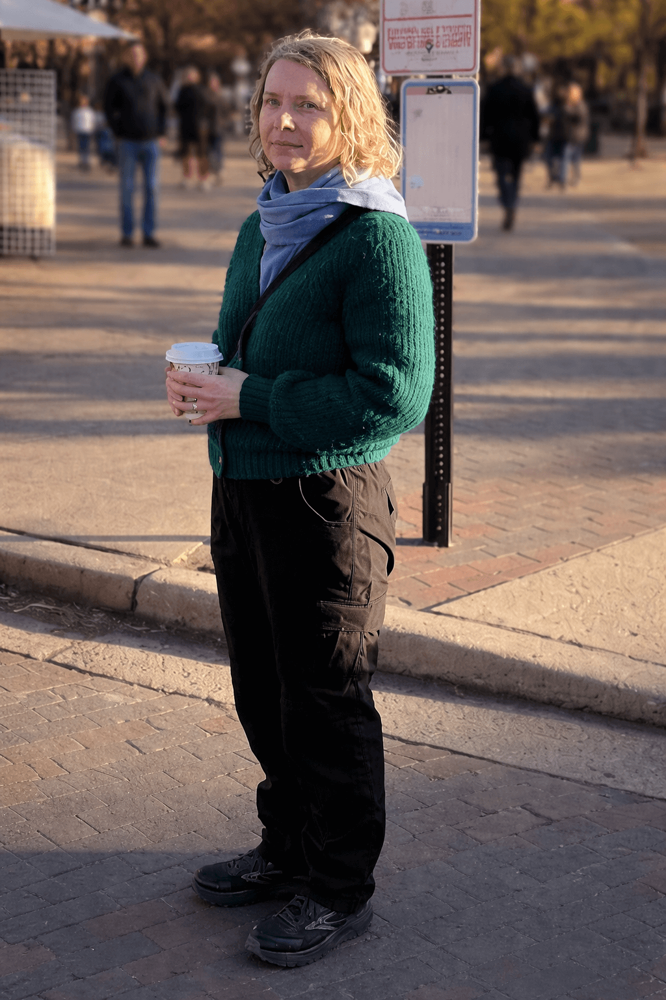

Artistic Director
Dr. Oksana Bihun is the founder and the Artistic Director of Summer Blooms. She is a composer with musical training in Ukraine. Her art is rooted in authentic life that allows her to channel music with honesty and vulnerability. Dr. Bihun’s compositions spring out of necessity and are grounded in deeply held values. Her music explores difficult themes of wartime sacrifice and suffering, as well as marginalized spiritual experiences. In her art, Dr. Bihun bears witness to humanity by participating in the unfolding work, listening as the art form discloses itself.
Oksana Bihun’s approach to directing Summer Blooms is guided by the same innate disposition. She supports artistic expression beyond technical excellence, inviting musicians to enrich the music with their emotional and spiritual experiences. Dr. Bihun surrenders to the structure and methods that emerge through the creative process of directing, inspiring ensemble members to co-create with agency and freedom.